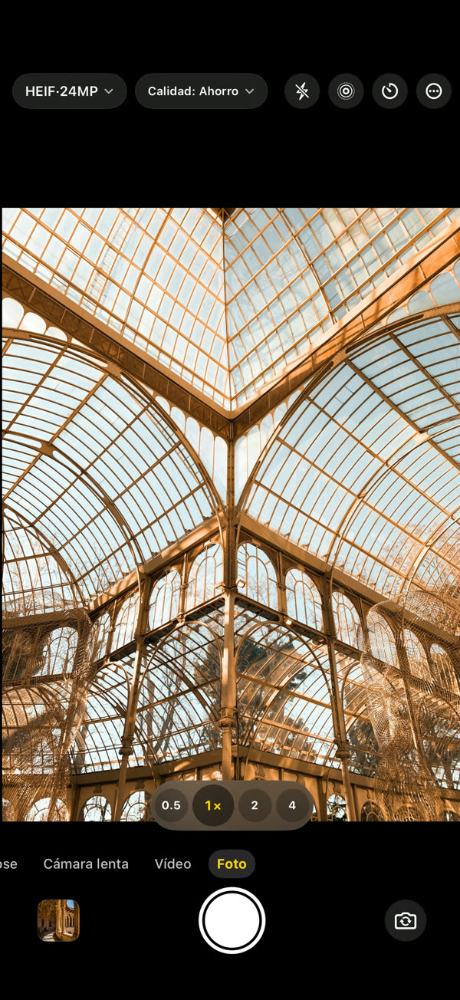
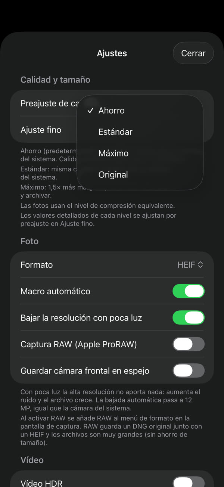
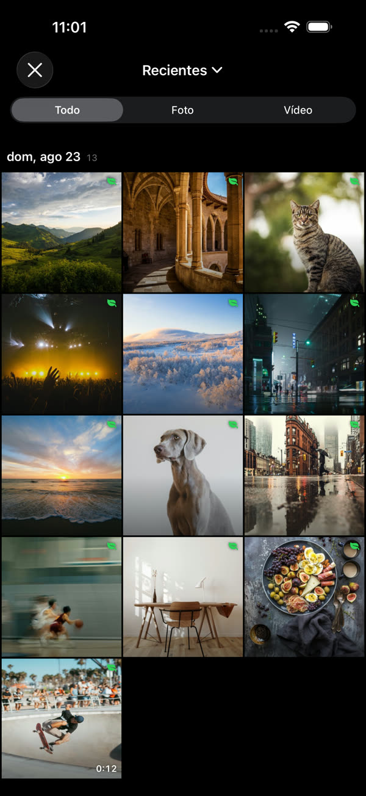
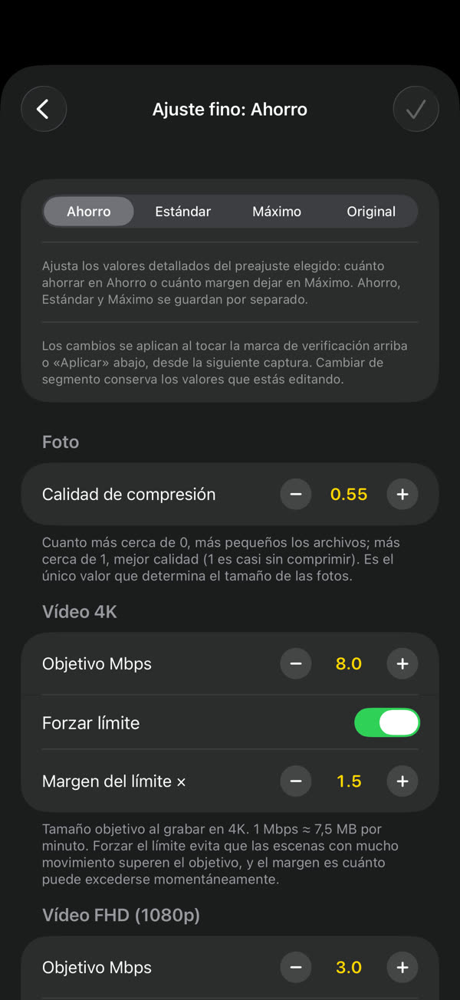
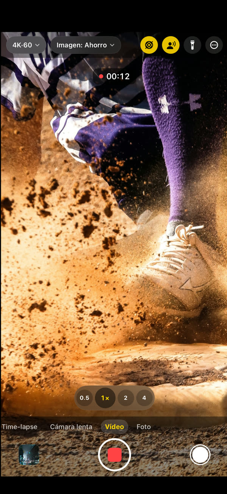

GramCamera
La misma escena, un archivo menor.
GramCamera captura igual que la cámara del sistema, pero guarda archivos más pequeños. Reduce el tamaño sin una pérdida visible de calidad: el mismo almacenamiento cunde mucho más.
Descárgalo en el App StoreiOS 17 o posterior · iPhone y iPad

En cada toma, cerca de un 60 % menos de espacio.
Foto3,7 MB → 1,5 MB~60 %
Vídeo 4K169 MB → 60 MB / min64%
Vídeo FHD60 MB → 23 MB / min62%
Elige, dispara y mira lo que ahorras.




Todo lo que necesitas, incluido.
Tú decides cuánto ahorrar
Ahorro, Estándar o Máximo. El ajuste fino define el tamaño objetivo por resolución
Directo a la app Fotos
Sin fototeca aparte. Tus capturas van a la app Fotos del sistema
Se ve lo que ahorras
Cada captura muestra cuánto más pequeña es frente a la cámara del sistema
Una cámara de verdad
Foto, vídeo, cámara lenta, time-lapse, 4K 60 fps, vídeo HDR, audio espacial, lentes y macro
Se queda en tu dispositivo
Las capturas viven en tu dispositivo y en tu fototeca. Sin cuenta ni inicio de sesión — Privacidad